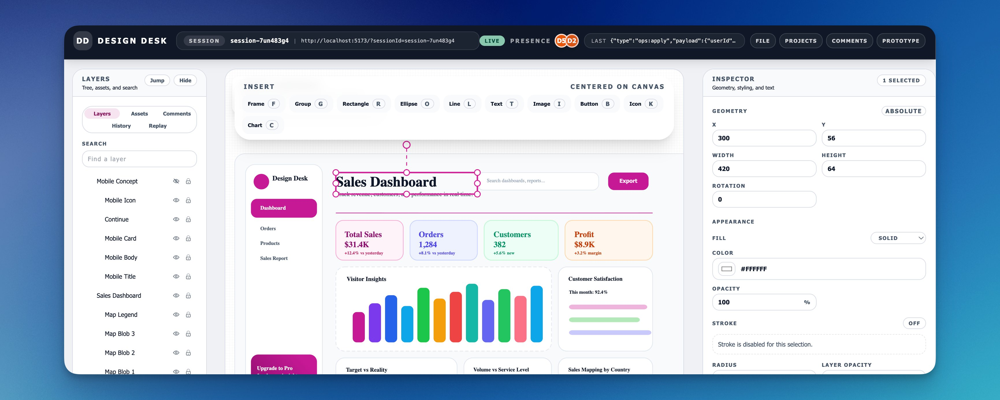
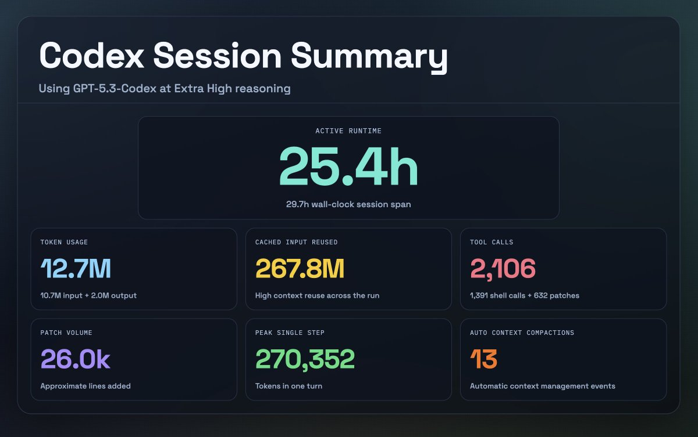
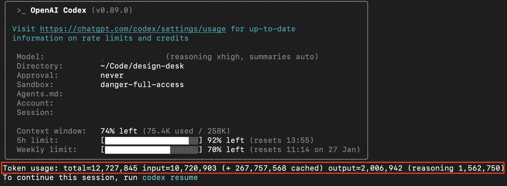
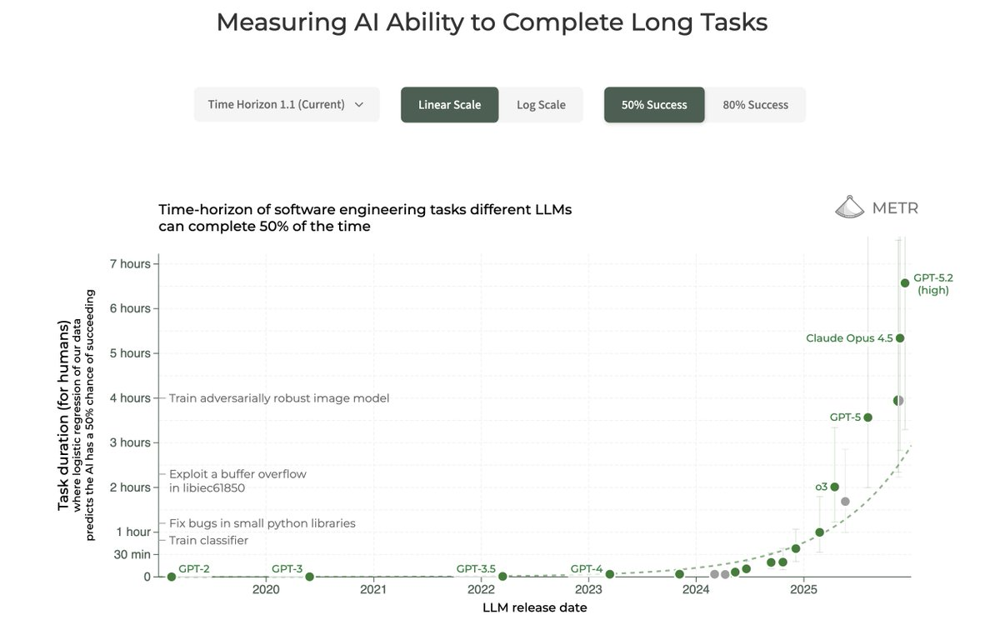

原文：Run long horizon tasks with Codex 来源：OpenAI Developers Blog | 2026-02-23 作者：Derrick Choi
· · ·
· · ·
我让 Codex 为会话数据生成了一个摘要页面：

这是 CLI 会话统计和 token 使用量的视图：

这些截图有用，因为它们让核心变化变得可见：agentic 编程越来越关乎时间跨度，而不仅仅是一次性的智能。
· · ·
这不仅仅是"模型变聪明了"。实际的变化是：agent 能保持更长时间的连贯性，端到端完成更大块的工作，并且在出错后恢复而不丢失线索。
METR 在时间跨度基准测试上的工作为这个趋势提供了一个有用的框架：前沿 agent 能以约 50% 和 80% 可靠性完成的软件任务长度一直在快速攀升，大约每 7 个月翻一倍。参见 Measuring AI Ability to Complete Long Tasks (METR)。
我们最近的 GPT-5.3-Codex 发布在两个实用方面进一步推动了 agent 工作：
我也受到了 Cursor 关于长时间自主编程系统的文章启发，包括他们的浏览器构建实验：How Cursor built a web browser (Scaling agents)。Cursor 团队写道，OpenAI 模型"在长时间自主工作方面好得多：遵循指令、保持专注、避免漂移、精确完整地实现事物。"
· · ·
长时间运行的工作，与其说是关于一个巨大的 prompt，不如说是关于模型运行其中的 agent 循环。在 Codex 中，这个循环大致是：
1. 计划 2. 编辑代码 3. 运行工具（测试/构建/lint） 4. 观察结果 5. 修复失败 6. 更新文档/状态 7. 重复
这个循环重要，因为它给了 agent：
这也是为什么 Codex 模型在 Codex 界面上比在通用聊天窗口中感觉更好：harness 提供了结构化的上下文（仓库元数据、文件树、diff、命令输出），并强制执行一个有纪律的"完成条件"流程。
我们最近发布了一篇关于 Codex agent 循环的文章，有更多细节。在此基础上，我们还推出了 Codex 应用，让这个循环在日常中可用：
· · ·
我选了一个设计工具作为这次"实验"，因为它是一个严苛的测试：UI + 数据模型 + 编辑操作 + 大量边界情况。你没法糊弄它。如果架构错了，它会很快崩溃。
我给 GPT-5.3-Codex 一个详实的规格说明，以"Extra High"推理级别运行，它最终不间断运行了约 25 小时，能够保持连贯并产出高质量代码。模型还为它完成的每个里程碑运行了验证步骤（测试、lint、类型检查）。
· · ·
最重要的技术是持久化的项目记忆。我把规格说明、计划、约束和状态写在 markdown 文件中，Codex 可以反复查阅。这防止了漂移，并保持了一个稳定的"完成"定义。
文件栈如下：
Prompt.md（规格 + 交付物）
目的：冻结目标，让 agent 不会"构建了令人印象深刻但错误的东西"。
关键部分：
初始 prompt 告诉 Codex 把 prompt/spec 文件当作完整的项目规格说明，并生成一个基于里程碑的计划。
Plan.md（里程碑 + 验证）
目的：把开放式工作变成一系列 agent 可以完成和验证的检查点。
关键部分：
注意：我们最近在 Codex 应用、CLI 和 IDE 扩展中添加了原生的 plan 模式。这有助于在做更改之前把大任务拆成清晰、可审查的步骤序列，让你可以提前对齐方法。如果需要额外澄清，Codex 会问后续问题。用 /plan 斜杠命令来开启。
Implement.md（引用计划的执行指令）
目的：这是运行手册。它告诉 Codex 确切的操作方式：按计划走、保持 diff 范围小、运行验证、更新文档。
关键部分：
Documentation.md（状态 + 决策，随交付更新）
目的：这是共享记忆和审计日志。它让我可以离开几个小时后仍然理解发生了什么。
关键部分：

图：运行期间里程碑验证的实际样子
· · ·
Codex 不是只写代码然后祈祷它能工作。在里程碑之后，它运行验证命令并在继续之前修复失败。

图：Codex 在 lint 失败后修复问题的示例
· · ·
结果不是完美的或生产就绪的，但它是真实的、可测试的。这次运行的标准不是"它能编译"，而是"它是否遵循了指令，它是否真的能工作？"
实现的高级能力：
· · ·
让这次运行成功的不是一个聪明的 prompt。而是以下组合：
这就是长周期编程工作的发展方向：更少的看护，更多的带护栏委托。
· · ·
这次 25 小时的 Codex 运行是代码构建未来方向的预览。我们正在超越单次 prompt 和紧密的结对编程循环，走向长时间运行的队友——它们可以端到端承担真正的工作切片，你在里程碑处把控方向，而不是微管理每一行。
我们对 Codex 的方向很简单：更强的队友行为、与你真实上下文更紧密的集成、以及让工作保持可靠、可审查、易于交付的护栏。
我们已经看到开发者在 agent 吸收了例行实现和验证工作后变得更快，把人类解放出来做最重要的部分：设计、架构、产品决策，以及那些没有模板的新问题。
这不会止步于开发者。随着 Codex 越来越擅长捕获意图和提供安全脚手架（计划、验证、预览、回滚），更多非开发者将能够构建和迭代，而不需要住在 IDE 里。
Codex 界面和模型还有更多即将到来，但北极星保持不变：让 agent 感觉不像一个你需要看护的工具，而更像一个你可以信任做长周期工作的队友。
如果你想自己试试，从这里开始：